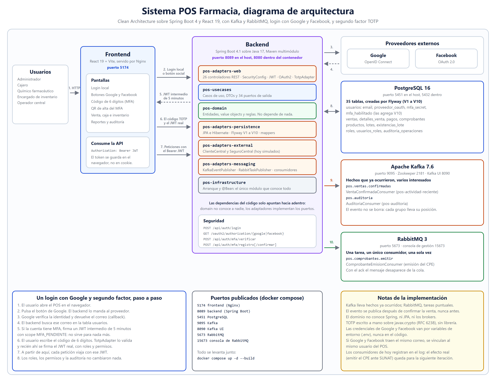

El mismo punto de venta para una cadena de boticas, partido en nueve servicios para aguantar 500 locales sin que una caja se quede parada.
Por qué el sistema quedó así: de dónde venimos, cómo decidimos los cortes y qué cuesta cada servicio que agregamos.
Cómo funciona por dentro: el código de cada servicio, el camino de una venta, qué pasa cuando algo se cae y cómo lo probamos.

A fin de mes un reporte escanea tres meses de ventas y le quita disco a las cajas justo cuando más se vende.
| Lo que tiene que aguantar | Objetivo | Por qué |
|---|---|---|
| Ventas en pico | 200 / s | 1500 cajas, 2 ventas por minuto cada una |
| Lecturas de catálogo | 5000 / s | Unas 5 líneas por venta, más búsquedas |
| Agregar un producto (p99) | < 200 ms | El cajero escanea sin esperar |
| Confirmar la venta (p99) | < 500 ms | El cliente está en el mostrador |
| Disponibilidad del cobro | 99.9% | Una caja parada es dinero perdido |
SUNAT se cae, y seguido. Eso nunca puede impedir una venta.
La primera propuesta tenía cuatro servicios cortados por cohesión transaccional: identidad, catálogo, clientes y ventas. Para una cadena chica era la respuesta correcta. Con 500 locales hay que cortar también por cómo carga cada parte y por qué se cae junto.
Catálogo es pura lectura y se cachea. Inventario escribe sobre la misma fila todo el tiempo. Juntos, los bloqueos de stock se comen las conexiones que atendían las lecturas.
Es lo único que habla con un tercero lento y que se cae. SUNAT caída tiene que dejar comprobantes pendientes, no cajas paradas.
Un reporte de tres meses no puede tocar la base de las cajas. Tiene su propia base, que se llena con eventos.
| 4 servicios | 9 servicios elegido | 15 o más | |
|---|---|---|---|
| Saltos para vender | 2 | 3 | 6 a 8 |
| SUNAT aislada | No | Sí | Sí |
| Procesos que operar | 5 | 10 | 16 o más |
| Sirve para | 20 locales | 500 locales | Ningún tamaño de esta cadena |
ms-identidadusuarios, login y JWT
usuarios, roles, locales, cajas
ms-catalogoproductos y precios
productos, categorías, laboratorios
ms-inventariostock y lotes (FEFO)
stock_local, lotes, reservas
ms-ventasarma, cobra y orquesta
ventas, pagos, saga, outbox
ms-clientespadrón, convenios, recetas
clientes, convenios, recetas
ms-promocionesdescuentos
promociones y sus condiciones
ms-creditoventa al fiado con límite
líneas, movimientos, reservas
ms-facturacioncomprobantes ante SUNAT
comprobantes, envíos, notas de crédito
ms-reportestableros sin tocar ventas
rm_ventas, se llena con eventos
Borde rojo: sin él no hay venta.
api-gatewayEn un edificio, los nueve son las oficinas. El gateway es la recepción, Kafka el correo interno y PostgreSQL el archivo, con un estante con llave por oficina.
Servicios al 99.9% llamándose en cadena:
| Saltos | Disponible | Caído al mes |
|---|---|---|
| 1 | 99.90% | 43 min |
| 3 | 99.70% | 2.2 h |
| 9 | 99.10% | 6.5 h |
Si cada servicio tiene 1% de llamadas lentas:
| Saltos | Al menos una lenta |
|---|---|
| 1 | 1.0% |
| 3 | 3.0% |
| 5 | 4.9% |
Entonces, ¿más servicios aguantan más consultas? Solo si cada uno se lleva sus datos. Lo que más mueve la aguja es la caché de catálogo en memoria (de 10 a 100 veces) y la base aparte para reportes. Ninguna de las dos necesita más servicios.
Las 35 tablas del monolito se repartieron en nueve bases. Si un servicio necesita un dato de otro, lo pide por HTTP o se lo guarda cuando le llega un evento. Nunca un JOIN.
CREATE DATABASE pg_ventas OWNER u_ventas; REVOKE CONNECT ON DATABASE pg_ventas FROM PUBLIC; -- El usuario de ms-inventario no puede ni conectarse a pg_ventas. -- No depende de que alguien se acuerde de la regla.
Y así con las nueve. En desarrollo es un contenedor Postgres con nueve bases; en producción serían nueve instancias.
ArchUnit es una librería de pruebas para Java.
No prueba si una suma da bien: prueba quién puede importar a quién. Lee las
clases compiladas y, si una depende de algo que no debe, ./mvnw test sale en rojo.
// ArquitecturaTest.java, en los nueve servicios
layeredArchitecture()
.layer("dominio").definedBy("..domain..") // las capas se
.layer("casos de uso").definedBy("..usecases..") // declaran por
.layer("adaptadores").definedBy("..adapters..") // paquete
.whereLayer("adaptadores")
.mayOnlyBeAccessedByLayers("infraestructura")
// a los adaptadores solo los conoce la configuración
.whereLayer("casos de uso")
.mayOnlyBeAccessedByLayers("adaptadores", "infraestructura")
// a los casos de uso los llaman los de afuera
.check(clases); // si alguien rompe la regla, falla
Son los anillos del dibujo escritos como prueba: uno de afuera puede usar a uno de adentro, nunca al revés. El archivo trae dos reglas más: el dominio no importa Spring ni JPA, y un caso de uso no importa un adaptador.
ServiciosExternosPort.
El caso de uso pide lo que necesita por ese puerto y el adaptador HTTP lo implementa
desde afuera.Serían 9 servicios por 7 módulos: 63 pom.xml. Esta prueba de unas 20 líneas
garantiza lo mismo, corre en segundos y falla con un mensaje que dice qué clase rompió
la regla.
La outbox es la bandeja de salida de ms-ventas: una tabla más dentro de pg_ventas. Al confirmar, ventas no le habla a Kafka: anota el evento en esa tabla, en la misma transacción que la venta. Un proceso aparte revisa la bandeja cada 200 ms y lo manda a Kafka. Si Kafka está caído, el evento espera en la tabla y la venta ya quedó cobrada.
.dlq con mensajes quiere decir que algo se rompióQué pasaría: las dos leen "queda 1", las dos venden y el stock queda en menos uno. Cómo lo evitamos: Postgres resta solo si alcanza, en una sola sentencia. La caja que llega segunda no toca ninguna fila y el cajero ve "sin stock".
UPDATE stock_local SET reservado = reservado + ? WHERE producto_id = ? AND local_id = ? AND disponible - reservado >= ? -- 0 filas afectadas: no hay stock
Qué pasaría: se cobra, el servidor se reinicia antes de avisar a Kafka y esa venta nunca tiene comprobante. Cómo lo evitamos: el aviso se guarda en la tabla outbox, en la misma transacción que la venta. O se guardan los dos o ninguno.
@Transactional
public Venta confirmar(UUID ventaId, String tipoComprobante) {
venta.confirmar();
ventas.guardar(venta);
sagas.abrir(venta.id());
eventos.publicar("venta", venta.id(), Topicos.VENTAS_CONFIRMADAS, venta.localId(), evento);
} // publicar() escribe en la tabla outbox, dentro de la misma transacción
Qué pasaría: facturación recibe la misma venta dos veces y emite dos
comprobantes. Cómo lo evitamos: cada evento trae un id; el consumidor lo
anota en evento_procesado y, si ya estaba, no hace nada.
@KafkaListener(topics = Topicos.VENTAS_CONFIRMADAS, groupId = "ms-facturacion")
public void recibir(String mensaje, Acknowledgment ack) {
idempotencia.unaVez(sobre.eventoId(), "ms-facturacion.venta-confirmada",
() -> emitir.registrar(sobre.datos())); // la segunda vez no hace nada
ack.acknowledge();
}
// paso 3, PublicadorOutbox.java SELECT id, tipo, clave, payload FROM outbox WHERE publicado_en IS NULL ORDER BY creado_en LIMIT ? FOR UPDATE SKIP LOCKED -- cada copia de ms-ventas toma filas distintas kafka.send(...).get(5, SECONDS); // espera que Kafka confirme UPDATE outbox SET publicado_en = now() ... // solo lo confirmado
Nadie le ordena a inventario ni a facturación qué hacer: cada uno escucha el evento y
trabaja solo. Ventas solo lleva la ficha y marca las casillas cuando llegan los avisos.
COMPENSADA existe en el código, pero nadie la marca todavía.
La regla: nada fuera de stock y pago puede impedir una venta. Hoy la cumplimos en todo menos en catálogo.
No reintentamos entre servicios: el que reintenta es la caja, con su
Idempotency-Key, para no cobrar dos veces.
No son mediciones ni el tiempo normal: son el tope que se espera antes de pasar al
plan B. Están en ClientesDeServicios.java, uno por destino. Las esperas caen al
agregar líneas; confirmar no llama a nadie, por eso cumple sus 500 ms aunque todo lo demás
esté caído.
Resilience4j, en ClientesHttpConfig.java. Si el destino ya está fallando,
deja de esperarlo: responde con el plan B al instante.
| Qué rompimos mientras se vendía | Qué pasó | |
|---|---|---|
| Facturación | Las cajas vendieron igual; al volver emitió los pendientes | pasó |
| La base de facturación, 8 s | El consumidor esperó, reintentó y emitió | pasó |
| Un evento corrupto | Quedó en la cola muerta; las demás ventas siguieron | pasó |
| Kafka entero | La venta se confirmó; el evento salió al volver Kafka | pasó |
| Cuadre final | 6 ventas (3 + 1 + 1 + 1, una tanda por escenario): 6 comprobantes, 6 en reportes, 6 sagas cerradas | pasó |
Spring Kafka, sin configurar, reintenta diez veces seguidas y descarta el evento. Eran ventas sin comprobante. Ahora reintenta con espera y, si igual falla, lo guarda en la cola muerta.
Un script de bash, scripts/verificar-resiliencia.sh, que corre contra el
sistema levantado con Docker Compose. Tarda unos cuatro minutos.
docker compose stop y start;
renombrar la tabla de comprobantes 8 s; kafka-console-producer para meter
un mensaje basuracurl contra el gateway, igual que la cajapsql cuenta filas en cada base y
docker compose logs busca los reintentosCon 20 locales esta arquitectura es una pérdida neta. Un monolito con réplicas y caché aguanta ese volumen con un décimo del costo. Se justifica pasando de 50 a 80 ventas por segundo, o cuando SUNAT empieza a costar ventas de verdad.
| Integrante | Parte |
|---|---|
| Juan | Bloque 1: de dónde venimos, supuestos de carga, criterio de corte de los servicios, costo de cada salto y una base por servicio |
| Javier | Bloque 2: Clean Architecture dentro de cada servicio, camino de una venta y Kafka, código de los problemas duros, degradación y pruebas |
La arquitectura correcta es la que la carga justifica, ni una pieza más.